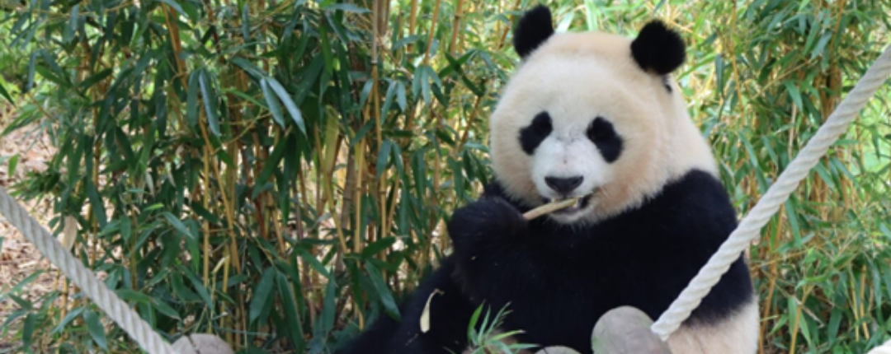

Voorlezen
Fan Xing weg uit Nederland

Pandajong Fan Xing geniet van de bamboe
Door een groot gezelschap werd ze uitgezwaaid, reuzenpandabeer Fan Xing. Drie jaar geleden was ze geboren in Ouwehands Dierenpark. Haar vader en moeder woonden daar toen al drie jaar, overgekomen uit China. Maar nu is ze zelf in China. De pandabeer, die alleen in China in het wild leeft, komt in verschillende dierenparken voor, maar voor bijna alle panda's geldt dat er met China strikte afspraken zijn gemaakt over hun verblijf.
Eigen weg
Het is zover. Een van de publiekstrekkers van Ouwehands Dierenpark, panda Fan Xing, heeft ons land verlaten. De nu driejarige pandabeer, dochter van Xing Ya en Wu Wen, vertrok afgelopen woensdag uit het dierenpark in Rhenen om met het vliegtuig naar China af te reizen. De ouders, die in 2017 naar Nederland kwamen, blijven hier, voorlopig althans. Met de geboorte van dit eerste reuzenpandajong in Nederland werd op 1 mei 2020 geschiedenis geschreven. Volgens het convenant tussen China en Nederland moeten in het buitenland geboren reuzenpanda’s voor hun vierde levensjaar verhuizen naar het land van oorsprong, China. In China leeft de reuzenpanda in het wild. Hij leeft alleen, solitair, soms met een jong dat na ongeveer twee jaar zijn eigen weg gaat. Fan Xing is inmiddels drie jaar. Ouwehands Dierenpark wil graag zo dicht mogelijk bij de natuur blijven. Daarom werkt het dierenpark al maanden samen met de Chinese partners toe naar het vertrek van Fan Xing naar China. Voor het vertrek vond er zoals was afgesproken een medische keuring plaats, en die zorgde voor een verrassing. De panda bleek namelijk een vrouwtje te zijn en geen mannetje, wat eerder was vastgesteld. Voor de missie van Fan Xing, het zorgen voor nageslacht en het in stand houden van deze bijzondere diersoort, verandert er natuurlijk niets. Fan Xing gaat daar een rol in spelen, zij het als pandavrouw en niet als man.
In bruikleen
Al decennialang laat China panda’s naar andere landen vertrekken. China heeft daar verschillende bedoelingen mee. Zo stuurde de voormalige president Mao Zedong ooit twee exemplaren naar de Sovjet-Unie om de bekoelde relatie met het land te verbeteren. Dertien jaar later, in 1972, ontvingen de Verenigde Staten ook twee panda’s na een historisch bezoek van president Nixon aan China. Sinds de jaren tachtig doet China de dieren echter niet meer cadeau, maar gaat het om ‘bruikleen’ voor een periode van tien of vijftien jaar. Eventuele nakomelingen blijven altijd in bezit van China. Panda’s zijn tegenwoordig een prijzig cadeau. Ouwehands Dierenpark draagt jaarlijks 1 miljoen dollar af aan China en heeft zeker 7 miljoen [geïnvesteerd in=investeren in] het verblijf van Xing Ya en Wu Wen. Daarnaast kost de verzorging van het paartje, een panda eet gemiddeld zo'n 60 kilo bamboe per dag, zeker een half miljoen euro per jaar. Fan Xing’s reis begon woensdagochtend. Ze werd naar haar reiskist geleid en vervolgens met een vrachtwagen naar Schiphol gebracht. Op het vliegveld waren voorbereidingen getroffen om de reis naar China zo soepel mogelijk te laten verlopen. Niet alleen een Chinese dierenarts was erbij maar ook Ouwehands-dierenverzorgster Brenda van Ekeren reisde mee. Het was haar speciale taak om in de gaten te houden of het goed ging met het jonge dier. Belangrijk was onder andere om de panda af en toe wat voedsel aan te bieden. ‘Zodat de darmen een beetje op gang blijven, want dat is voor panda's erg belangrijk’, legde ze uit. ‘Dus nemen we bamboe mee onderweg en wat voer zodat we haar ook een beetje kunnen bezighouden.’
Nog altijd kwetsbaar